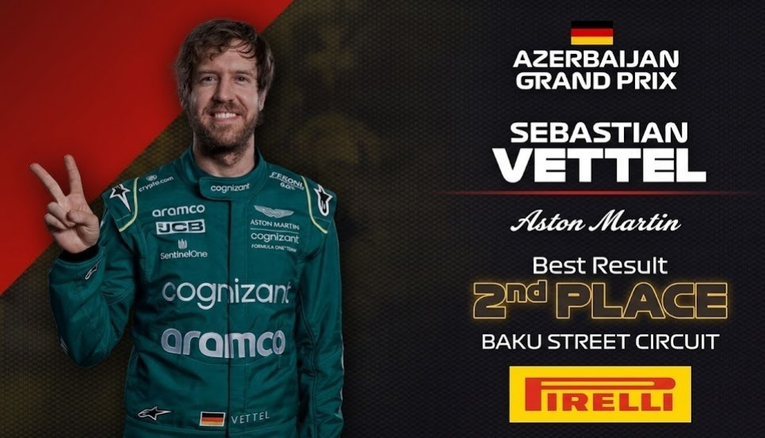

Sebastian Vettel
DRIVER PRESENTATION

Sebastian Vettel
Trayectoria Legendaria y Liderazgo Estratégico de Sebastian Vettel en la Fórmula 1
Sebastian Vettel inició su formación en el karting alemán (1995), demostrando una precocidad técnica que lo llevó a ser parte del programa de jóvenes pilotos de Red Bull. Su ascenso meteórico culminó con su debut en 2007, convirtiéndose en el piloto más joven en puntuar en ese momento. Tras su victoria histórica con Toro Rosso en Monza 2008, Vettel ascendió a Red Bull Racing, donde estableció un dominio absoluto entre 2010 y 2013, obteniendo cuatro títulos mundiales consecutivos y rompiendo múltiples récords de precocidad. Su paso por Ferrari (2015-2020) consolidó su estatus como uno de los grandes de la historia, logrando 14 victorias con la Scuderia. En 2021, Vettel se unió a Aston Martin para liderar el ambicioso proyecto del equipo británico, aportando su vasta experiencia técnica y visión estratégica. Con más de 50 victorias y 120 podios, Vettel personifica la excelencia competitiva y el compromiso con la evolución técnica del deporte.
MOMENTOS DESTACADOS

Tetracampeón Mundial
2010-2013: Una era de dominio absoluto con Red Bull Racing, logrando cuatro títulos consecutivos y récords históricos.

Milagro en Monza 2008
Bajo una lluvia torrencial, Vettel logra su primera victoria y la de Toro Rosso, asombrando al mundo con su talento.
Podio en Bakú 2021
Su primer podio con Aston Martin, demostrando que su clase y maestría táctica siguen intactas en la nueva era.